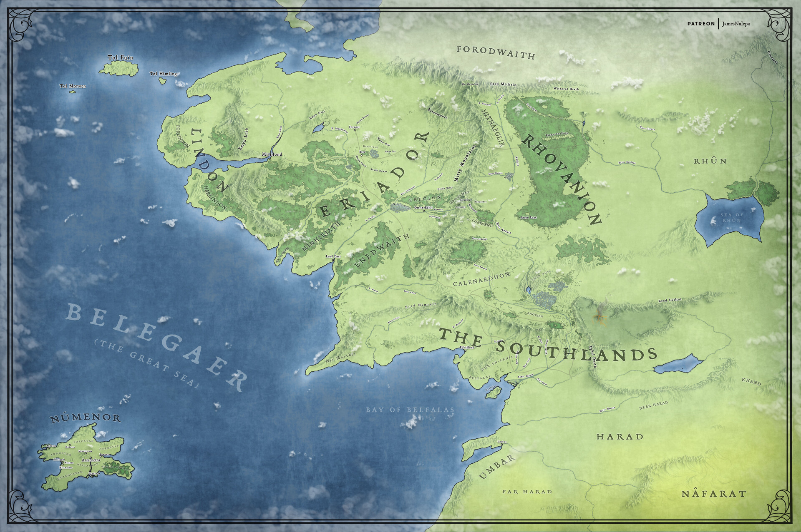

Numenor, J.R.R. Tolkien'in Orta Dünya evreninde yer alan güçlü bir ada krallığıdır. İkinci Çağ'da kurulmuş ve insanların en gelişmiş medeniyetlerinden biri olmuştur. Ancak zamanla güç ve ölümsüzlük arzusu nedeniyle yozlaşmış ve sonunda ada büyük bir felaketle denizin altına gömülmüştür.
Lindon, Orta Dünya'nın batı kıyısında bulunan bir Elf krallığıdır. Birinci Çağ'ın sonunda Beleriand'ın büyük bölümü denizin altında kaldığında, hayatta kalan Elfler bu bölgede yaşamaya devam etmiştir. Lindon'un en bilinen hükümdarı Yüksek Kral Gil-galad'dır. Bu bölge, Elflerin Orta Dünya'dan Valinor'a doğru deniz yolculuğuna çıktıkları önemli limanlara da ev sahipliği yapar.
Eriador, Orta Dünya'nın kuzeybatısında yer alan geniş bir bölgedir. Batısında Lindon, doğusunda Misty Mountains (Sisli Dağlar) bulunur. Üçüncü Çağ'da bu bölgede Shire, Bree ve Arnor krallığının kalıntıları yer alır. Eriador, özellikle Hobbitlerin yaşadığı Shire ile tanınır ve Yüzüklerin Efendisi hikâyesinin başlangıç noktalarından biridir.
The Southlands, Orta Dünya'nın doğu ve güney bölgelerinde yer alan geniş bir coğrafyayı ifade eder. Bu bölge daha sonra Mordor olarak bilinecek toprakları da kapsar. Tolkien evreninde insanlar ve farklı halklar burada yaşamıştır. Güç Yüzükleri döneminde bu bölge önemli olayların yaşandığı yerlerden biridir ve zamanla karanlık güçlerin etkisi altına girmiştir.
Harad, Orta Dünya'nın güneyinde bulunan geniş ve sıcak bir bölgedir. Bu topraklarda yaşayan halklara Haradrim denir. Yüzüklerin Efendisi hikâyesinde Haradrim savaşçıları Mordor'un tarafında savaşan ordular arasında yer alır. Bölge çöller, sıcak iklim ve büyük savaş filleri (Mûmakil) ile tanınır.
Rhûn, Orta Dünya'nın doğusunda yer alan geniş topraklara verilen isimdir. Bu bölge Rhûn Denizi (Sea of Rhûn) çevresinde bulunur ve burada yaşayan insanlara Easterlings denir. Yüzüklerin Efendisi döneminde bu halkların bazıları Mordor'un müttefiki olarak savaşlara katılmıştır. Rhûn, Tolkien evreninde hakkında en az bilgi verilen fakat oldukça geniş bir coğrafyayı kapsayan bölgelerden biridir.
Rhovanion, Orta Dünya'nın doğu ve kuzeydoğu bölgelerinde yer alan geniş bir coğrafyadır. Bu bölge Misty Mountains (Sisli Dağlar) ile Rhûn Denizi arasında bulunur. Rhovanion, Mirkwood Ormanı, Dale şehri ve Erebor (Yalnız Dağ) gibi önemli yerlere ev sahipliği yapar. Tolkien evreninde insanların ve elflerin yaşadığı önemli bölgelerden biridir.